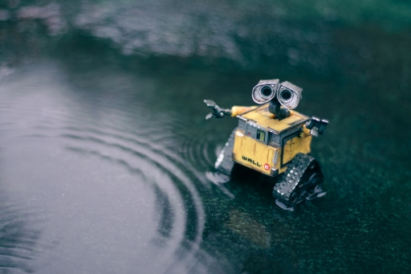

Reduce E-Waste!
Reducing e-waste is important for sustainability.

"Yellow and black robot toy." Photo by Erik Mclean on Unsplash. Unsplash License.
What can we do?
- Repair your electronics to extend their lives
- Recycle old devices/peripherals
More resources